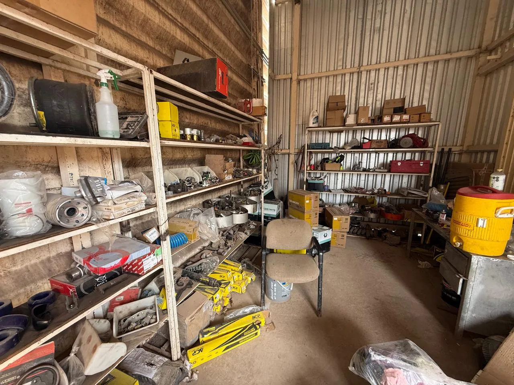
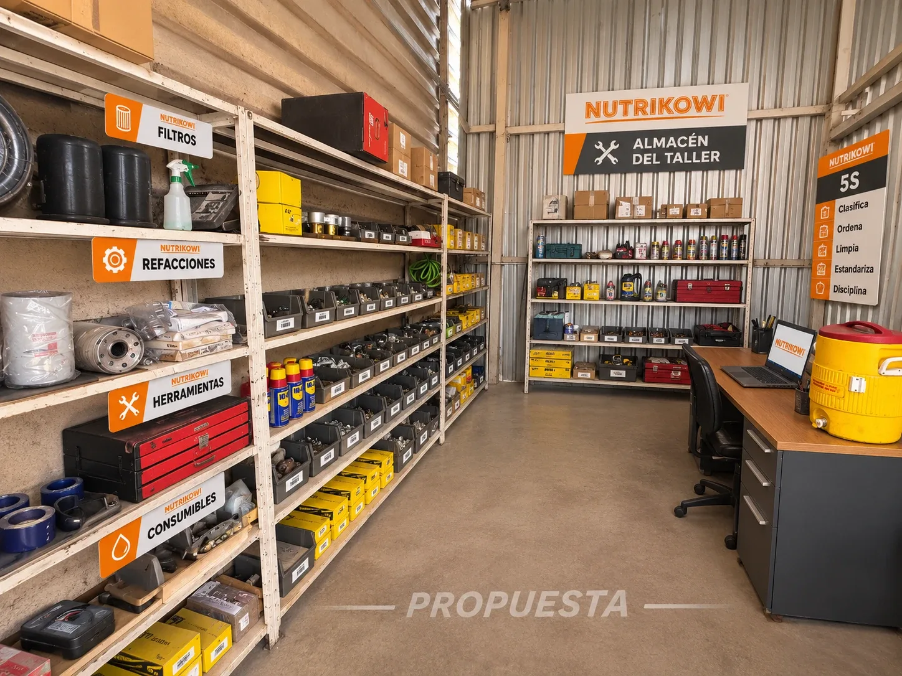
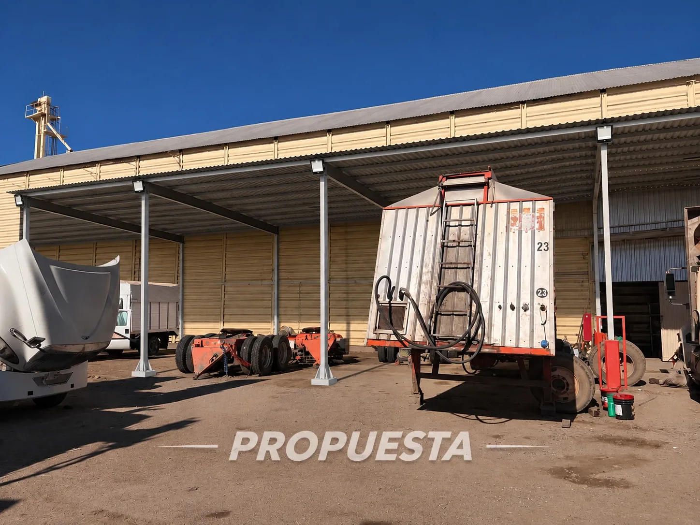
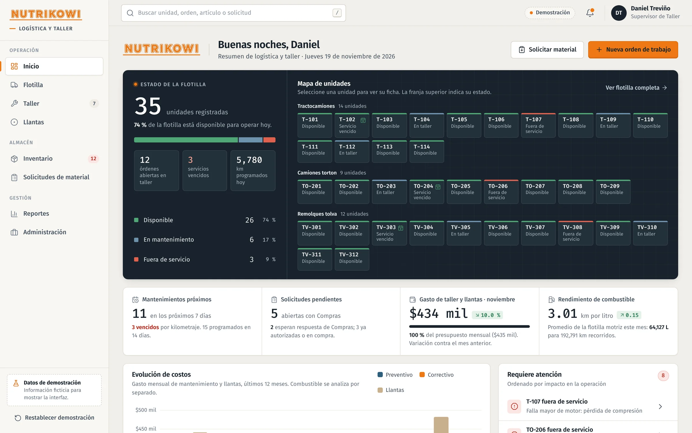
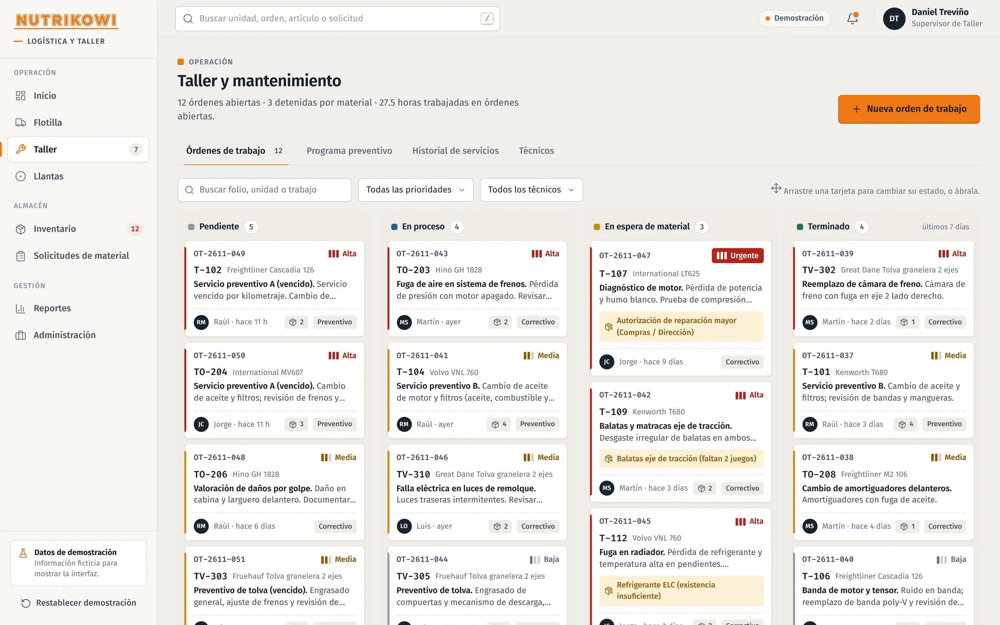
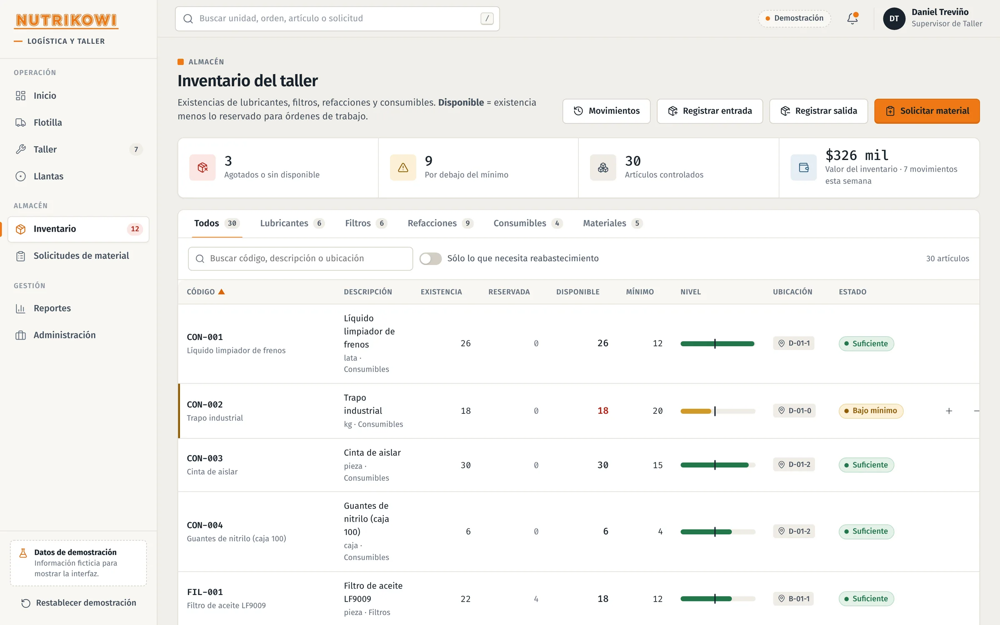
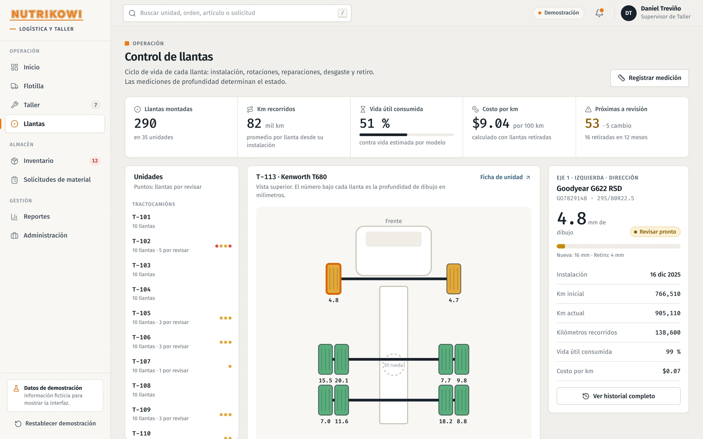
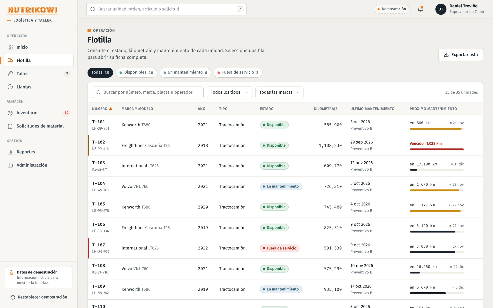
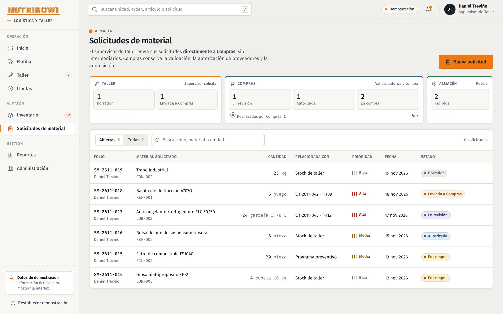
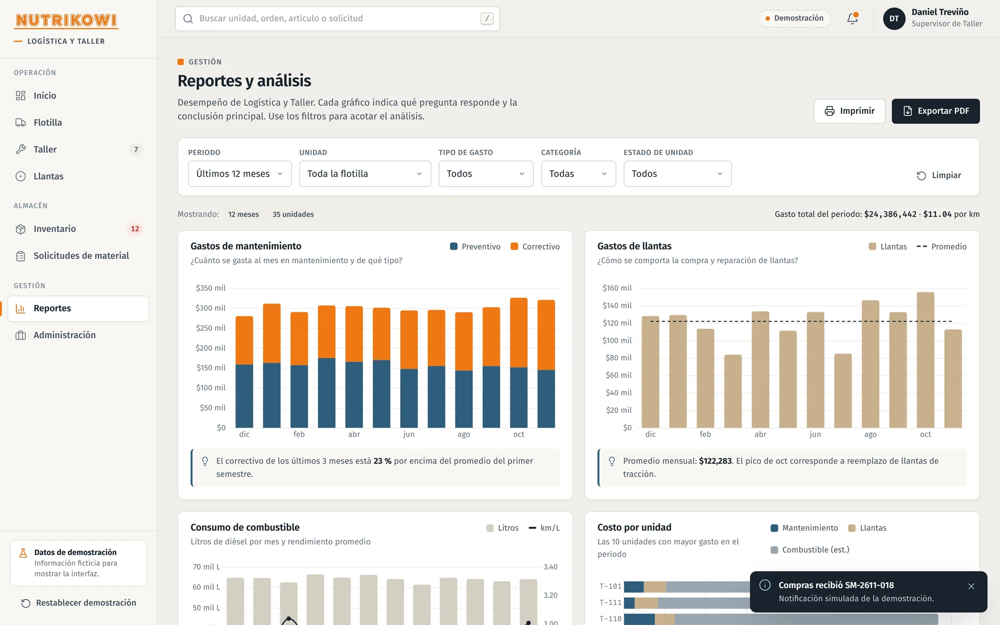

Del servicio externo
al control propio
Reestructuración del taller, internalización del mantenimiento preventivo y fortalecimiento administrativo de Logística
Nutrikowi mueve cerca de mil toneladas al día. La flotilla no puede detenerse.
12–14 horasViaje redondo a Hermosillo: planeación de turnos y cobertura de choferes
80 km/h en carreteraLímite interno con monitoreo GPS; terracería hasta 35 km/h en granjas
Rutas con chofer exclusivoCaborca y granjas de Hermosillo limitan intercambiar operadores
Datos operativos reportados por Logística; contexto, no capacidad certificada. Corte noviembre 2026.
Logística administra alrededor de $9 millones al mes. La disponibilidad de la flotilla sostiene ese costo por tonelada.
Promedio mensual de los seis meses reportados (gasto logístico total)
El costo por tonelada se movió entre $353 y $415. Cada unidad detenida reduce viajes disponibles con el mismo costo fijo.
Presentaciones mensuales de Logística 2026. Junio y agosto sin dato comparable (junio repite abril). El “gasto” puede incluir rubros por homologar antes de comparar meses.
Hoy, el preventivo de 33 unidades lo ejecuta y lo factura un tercero
visitas al mes de CAPASA
unidades atendidas al mes, en grupos de unas cuatro por visita
tiempo observado por unidad
en la factura: servicio y materiales, por separado
Diagnóstico CAPASA y archivo GASTOS CAPASA 2026. Tiempos por unidad estimados; flotilla reportada de ≈ 35 unidades.
El control del mantenimiento se nos escapa en cinco puntos
El preventivo depende de un tercero
Calendario, tiempos y precios de materiales los define el proveedor
Pagamos servicio que el taller podría absorber parcialmente
El taller no da abasto en horas pico
5–6 unidades pendientes en ciertos momentos; horas extra; rescate a Caborca dejó el taller con cobertura reducida
Horas extra, unidades detenidas y riesgo operativo
El taller no tiene inventario propio
No se conocen existencias ni consumo por unidad
Compras urgentes, faltantes y gasto sin planeación
Las llantas no tienen vida útil registrada
Se conoce lo que se compra, no lo que rinde cada llanta
No sabemos el costo por kilómetro ni la causa de cada retiro
La información no se consolida
Solicitudes retransmitidas por intermediarios; Logística sin función administrativa dedicada
Decisiones sin línea base ni indicadores comparables
Diagnóstico del taller y de Logística, 2026. El caso Caborca demuestra riesgo operativo; no tiene costo monetario validado.
En diez meses, el preventivo de CAPASA sumó $2.63 millones antes de IVA
promedio mensual
(diez meses, sin IVA)
GASTOS CAPASA 2026 (base correcta para el preventivo). Registros de costos aprobados, no necesariamente pagados. IVA calculado (16%) referencial: $420,487.12; total con IVA $3,048,531.65.
En llantas gastamos casi $2 millones en el año sin saber cuántos kilómetros rinde cada una
Enero–septiembre 2026 · promedio $209,788.83 al mes
Enero–octubre 2026 · 174 solicitudes · promedio $197,802 al mes
Son dos vistas de la misma compra en etapas distintas: no se suman.
COMPRA DE LLANTAS 2026 y cuenta 52012031. Aprobado no equivale necesariamente a pagado. El bajo gasto contable de septiembre puede reflejar calendario de compras, no menor consumo.
Seis cambios para que cada peso de mantenimiento tenga responsable, registro y medida
Internalizar el preventivo rutinario
Aceite, filtros, lubricación e inspección en el taller propio, por etapas
Reduce servicio pagado a terceros
Reorganizar turnos y supervisión
Mecánico adicional en traslape y supervisor con base en el taller
Menos rezago y horas extra
Inventario propio con Compras directo
Stock operativo en estantería existente y solicitudes sin intermediarios
Evita compras urgentes y faltantes
Programa integral de llantas
Trazabilidad desde la instalación hasta el retiro, llanta por llanta
Costo por kilómetro medible
Encargado Administrativo de Logística
Una función que consolida costos, indicadores y seguimiento
Control presupuestal y decisiones con datos
Plataforma digital del taller
Un solo registro de unidades, órdenes, inventario, solicitudes y llantas
Trazabilidad para comprobar resultados
Propuesta integral de mantenimiento de flotilla y reestructuración de Logística. Se mantienen proveedores externos para trabajos especializados.
Un mecánico en traslape y un supervisor en el piso atacan el rezago donde se genera
Qué resuelve en dinero
- Horas extra: muestra parcial de $8,944.98 al mes (≈ 64.83 h, mecánico y llantero)
- Rezago: 5–6 unidades pendientes en momentos pico vuelven a operar antes
- Capacidad: habilita absorber el preventivo de CAPASA
- Supervisión física: asigna carga, valida calidad, controla herramientas y stock
Organización del personal del taller (propuesta). Horas extra: proyección mensual de una muestra de nómina; se mide antes y después, no se asume eliminación total.
Cada orden de trabajo deja registro de tiempo, material y costo por unidad
Detectar
Km, horómetro, reporte o inspección
Programar
Preventivo, correctivo o especializado
Asignar
Técnico, turno, bahía y materiales
Recibir
Inspección inicial y evidencia
Ejecutar
Inicio, fin, hallazgos, materiales y fotos
Controlar
Autoriza trabajo adicional y su causa
Verificar
Calidad, seguridad y prueba
Liberar
Estado final y disponibilidad
Cerrar
Consumos, tiempos, costo e historial
Procedimiento operativo del taller Nutrikowi. Los pasos en naranja son los que generan el dato económico.
El supervisor pide directo a Compras y las autorizaciones se conservan
Inventario controlado permite conocer existencias y consumos, reducir compras urgentes, evitar faltantes y planear el gasto.
Estantería existente. No se compran racks. Familias: aceites, filtros, consumibles y refacciones menores validadas por historial.
Cantidades iniciales con datos de los primeros 30–60 días del piloto.
Modelo de inventario del taller y matriz de responsabilidades. El taller administra stock operativo; no se convierte en almacén general.
La estantería ya existe; lo que falta es orden, ubicación y registro


Imagen de propuesta: referencia conceptual, no plano constructivo ni evidencia de obra. No incluye compra de estantería.
Ampliar el tejabán daría sombra al preventivo, sin condicionar el arranque del piloto

Imagen de propuesta: referencia conceptual sobre la geometría real del patio; no es plano constructivo.
Una llanta se evalúa por su costo por kilómetro, no por su precio de compra
Vida útil (km) = km al retiro − km de instalación.
Por llanta se registra: unidad, posición, marca y medida, fecha y km de instalación, presión, profundidad de dibujo, rotaciones, reparaciones, causa de retiro y costo.
Alineación y balanceo por diagnóstico y condición, no por intervalo arbitrario.
Programa integral de llantas. La trazabilidad empieza con cada nueva instalación; el historial previo no existe y no se reconstruye.
Una función administrativa que convierta los datos de Logística en decisiones
Qué hará
- Consolidar viajes, toneladas, combustible, mantenimiento, llantas y costos
- Elaborar indicadores y reportes ejecutivos con seguimiento
- Analizar desviaciones, causas y tendencias
- Controlar documentos, presupuestos, gastos y compromisos
- Dar seguimiento a proyectos y acuerdos con responsables y fechas
Qué no será
- Segundo despachador, sustituto del supervisor, comprador ni responsable físico del almacén
Rediseño de la función administrativa de Logística. Es una definición de puesto y entregables, no una evaluación del ocupante actual. El reporte jerárquico lo define Dirección.
La plataforma muestra cómo funcionaría el controlPrototipo con datos de demostración




Prototipo visual publicado en sebas04l.github.io/Nutrikowi/plataforma. Las cifras de las capturas son ficticias. Haga clic en una captura para ampliarla.
Un solo registro conecta unidad, orden, material, llanta y costo

Unidad
Catálogo, motor, kilometraje e historial
Detecta el preventivo que toca
Orden de trabajo
Tiempos, hallazgos, fotos y liberación
Tiempo de ciclo y mano de obra

Material
Salida de inventario o solicitud con folio a Compras
Consumo por orden y por unidad
Llanta
Instalación, presión, rotación y retiro
Costo por kilómetro

Reporte
Costos, cumplimiento, pendientes y tendencias
Comparación contra CAPASA
Especificación del sistema digital del taller. El ERP actual se describe como cerrado, sin API confirmada.
Internalizar el preventivo rutinario abre una diferencia bruta de hasta $121,851.55 al mes
al mes: servicios CAPASA ($150,452.81) menos el costo empresa del mecánico adicional ($28,601.26)
Es un techo aritmético, no ahorro neto. Falta descontar servicios especializados que sigan externos, herramientas, capacitación y transición. Los materiales no cambian y no se cuentan como ahorro.
Promedios mensuales enero–octubre 2026, sin IVA, archivo GASTOS CAPASA 2026. Costo del mecánico ya incluye costo patronal. Horas extra: muestra parcial, se presentan solo como sensibilidad y no se suman como ahorro.
Es un potencial por validar, no un ahorro comprobado
- Dato observado en registros aprobados
- Pagado y facturado aún por conciliar
- Cálculo sujeto a validación
- Antes de inversión, externos y transición
- Costo total interno contra CAPASA
- Con tiempos, horas extra y disponibilidad reales
| Escenario de personal | Costo adicional mensual | Diferencia vs. servicios CAPASA | Estado |
|---|---|---|---|
| 1 mecánico adicional | $28,601.26 | $121,851.55 | Recomendación inicial |
| 2 mecánicos adicionales | $57,202.52 | $93,250.29 | Solo si la medición lo exige |
Escenarios de sensibilidad del modelo de internalización. Diferencias antes de otros costos. Ningún ahorro está realizado a la fecha de corte.
Cada iniciativa se conecta con una palanca económica medible
| Iniciativa | Ahorro potencial | Costo evitado | Productividad | Control presupuestal | Menor riesgo | Cómo se mide |
|---|---|---|---|---|---|---|
| Internalizar preventivo | Cuantificado: hasta $121,851.55/mes bruto | |||||
| Mecánico en traslape y supervisor | Horas extra, rezago y tiempo de ciclo | |||||
| Inventario y Compras directo | Compras urgentes, faltantes y exactitud | |||||
| Programa de llantas | Costo por km y causa de retiro | |||||
| Encargado administrativo | Indicadores y reportes entregados a tiempo | |||||
| Plataforma digital | Órdenes y llantas con registro completo | |||||
| Diésel, GPS, recepción de materias primas, patio | Por evaluar; sin ahorro atribuido |
Solo la internalización tiene cifra calculada. Las demás iniciativas tienen mecanismo identificado y se cuantifican con la línea base del piloto. Recepción de materias primas: se han mencionado diferencias de hasta 600 kg; requiere báscula y conciliación antes de cuantificar.
Los resultados se comprobarán con indicadores propios, no con estimaciones
Mantenimiento
- Cumplimiento preventivo
- Realizados a tiempo / programados Semanal
- Disponibilidad técnica
- Unidades disponibles / flota aplicable Diario
- Tiempo de ciclo OT
- Fin − inicio, por tipo de trabajo Mensual
- Costo por unidad
- Materiales + mano de obra + externos Mensual
- Horas extra
- Horas y costo por persona y causa Quincenal
- Reincidencia
- Fallas repetidas por unidad y sistema Mensual
- Exactitud de inventario
- Existencia física / sistema Mensual
- Costo por km de llanta
- Costo / km de vida útil Al retiro
Logística
- Costo por tonelada
- Gasto logístico definido / toneladas entregadas
- Rendimiento de diésel
- Km/L o L/100 km por unidad y ruta
- Diésel por tonelada
- Costo de combustible / toneladas
- Utilización de flota
- Tiempo productivo / disponible
- Cumplimiento de viaje
- Viajes a tiempo / programados
- Tiempo de ciclo de ruta
- Salida de planta a retorno
No se fijan porcentajes objetivo hasta validar la línea base y que Dirección los apruebe.
Indicadores de mantenimiento y Logística del expediente maestro. Frecuencias sugeridas.
Proponemos un piloto de 90 días con una decisión al final
Preparación
Responsables, unidades piloto, formato de OT, herramientas, catálogo y flujo con Compras
Arranque
Preventivos rutinarios con registro de tiempos, materiales y horas extra; stock inicial
Estabilización
Ampliar unidades según capacidad; ajustar mínimos; auditar calidad e inventario; iniciar control de llantas
Evaluación
Costo total interno contra CAPASA, tiempos, horas extra, reincidencia y disponibilidad
Criterios de salida
- Preventivos cumplidos
- Seguridad y calidad
- Disponibilidad de unidades
- Costo total comparable
- Menos rezago
- Materiales trazables
Implementación propuesta. Horas extra dentro de límites aceptables también es criterio de salida. Los proveedores externos continúan para trabajos especializados.
El único costo nuevo confirmado es el mecánico; lo demás se decide con datos del piloto
| Recurso | Alcance | Monto |
|---|---|---|
| Mecánico adicionalHorario 10:00–18:00 | Costo empresa comunicado; incluye costo patronalTres meses de piloto: $85,803.78 | $28,601.26 / mes |
| Estantería para inventario | Se reutiliza la existente; no se compran racks | Sin compra |
| Herramientas esenciales | Dados para filtros y dados milimétricos; compresor y herramienta manual ya existen | Por cotizar |
| Stock inicial | Con consumo confirmado en el piloto; hoy los materiales ya se pagan vía CAPASA | Con datos del piloto |
| Ampliación de tejabán | Inversión complementaria; no condiciona el piloto | Por cotizar |
| Plataforma digital | Prototipo visual existente; desarrollo productivo por definir | Por definir |
| Encargado Administrativo | Rediseño de funciones; nivel y costo los define Dirección | Por definir |
No se incluyen precios sin cotización. Equipo especializado adicional se decide según el alcance real del preventivo que se internalice.
Lo que pedimos que Dirección autorice hoy
Piloto de 90 días
Internalizar preventivos rutinarios en alcance controlado
Mecánico adicional
$28,601.26 al mes, horario 10:00–18:00
Supervisor responsable del taller
Base física en el taller y requisición directa a Compras
Inventario operativo del taller
Estantería existente y controles digitales o documentales
Trazabilidad de llantas
Desde cada nueva instalación
Evaluar ampliación del tejabán
Como inversión complementaria
Encargado Administrativo de Logística
Aprobar el rediseño del puesto y sus entregables
Patrocinador y revisión mensual
Responsables y calendario de seguimiento
Hoy no pedimos aprobar un ahorro: pedimos aprobar la forma de medirlo.
Fuentes, criterios y pendientes
Fuentes internas
- CAPASA: GASTOS CAPASA 2026; análisis y conciliación enero–octubre 2026; revisión de facturas
- Materiales: análisis integral y matriz por unidad y motor; comparativo de proveedores; kit ISX450
- Llantas: COMPRA DE LLANTAS 2026; diagnóstico enero–septiembre 2026; cuenta 52012031
- Taller: catálogo de unidades; programa preventivo; procedimiento operativo; modelo económico de internalización
- Logística: presentaciones mensuales 2026 (feb, mar, abr, may, jul, sep)
- Sistema: especificación del sistema digital; prototipo publicado
Criterios de lectura
- Histórico es dato observado; potencial es cálculo por validar; propuesta no está implementada ni autorizada
- Montos sin IVA; el IVA es referencial y no es costo si es acreditable
- No se suman cuenta contable y solicitudes de llantas
- No se mezcla el preventivo CAPASA con el mantenimiento total
Pendientes
- Conciliar aprobado, facturado y pagado de CAPASA
- Incorporar el gasto contable total de mantenimiento (enero–septiembre) para dimensionar el resto
- Medir horas extra completas y tiempos reales; costear externos que permanecen
- Cotizar dados; normalizar gasto/toneladas de Logística